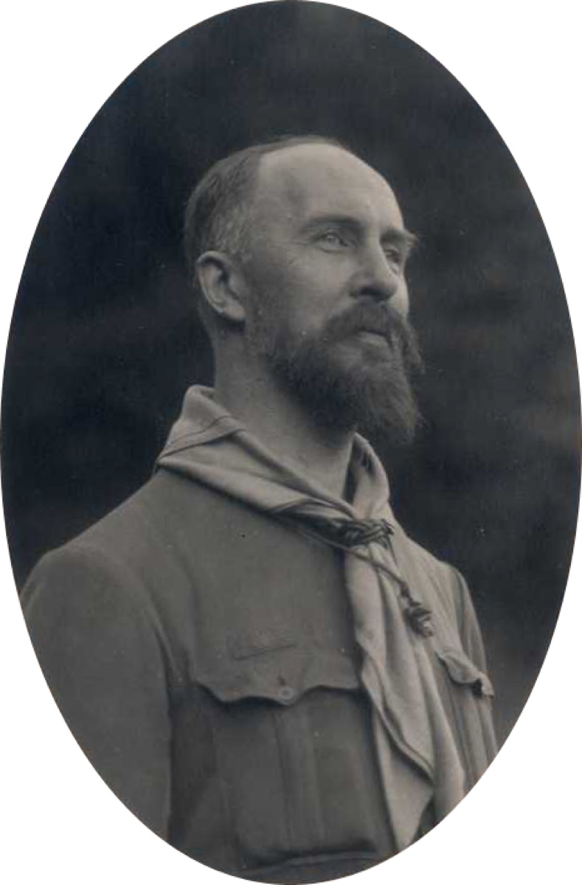

Časni sluge Božji
Svećenik
Časni sluga Božji Jakov Sevin
1882. – 1951.
Francuski isusovac Jakov Sevin bio je jedan od utemeljitelja katoličkoga izviđaštva u Francuskoj, a odgojnu metodu Roberta Baden-Powella povezao je s Evanđeljem. Pred kraj života utemeljio je redovničku zajednicu Svetoga Križa Jeruzalemskoga.
Tekst je sažet i prilagođen uz pomoć umjetne inteligencije.

Izvor slike
- Spomendan
- 19. srpnja
- Zaštitništvo
- Nije navedeno u izvoru
- Životni vijek
- 1882. – 1951.
- Djelovanje
- Mladi i odgoj · Obrazovanje i poučavanje vjere · Bolest i osobne kušnje
- Razdoblje
- 19., 20. stoljeće
- Crkveni naslov
- Časni sluga Božji
- Rođenje
- 7. prosinca 1882., Lille, Francuska
- Država rođenja
- Francuska
- Datum smrti
- 19.07.1951.
- Mjesto smrti/mučeništva
- Boran-sur-Oise, Francuska
- Uloga
- Svećenik
- Mučenik
- Ne
- Ostale oznake
- Časni sluga Božji – nema liturgijskog spomendana; u direktoriju naveden na dan smrti.
- Pripadnost
- Isusovac
- Drugi oblici imena
- Jacques Sevin · Jacques
- Priznanje herojskih kreposti
- 10. svibnja 2012., Benedikt XVI.
- Počivalište
- Posjed priorata Svetoga Križa Jeruzalemskoga, Boran-sur-Oise
U kalendaru zbirke naveden je dan smrti.
Životopis
Jakov Sevin rođen je 7. prosinca 1882. u Lilleu na sjeveru Francuske, a kršten je već sljedećega dana. Veći dio mladosti proveo je u Tourcoingu, gdje je pohađao zavod Presvetoga Srca. Školovanje je zbog jakih glavobolja morao nakratko prekinuti, a potom ga je završio u Lilleu. U rujnu 1900. stupio je u isusovački novicijat u Saint-Acheulu kraj Amiensa.
Kad su francuski zakoni protiv redovničkih zajednica natjerali isusovce u izgnanstvo, Sevin je formaciju nastavio izvan domovine. Novicijat je dovršio u belgijskom Arlonu, gdje je 1902. položio prve zavjete, a zatim je studirao i predavao u Belgiji i Nizozemskoj. Za svećenika je zaređen 2. kolovoza 1914. u Enghienu, na samom početku Prvoga svjetskog rata.
Još prije rata pozorno je čitao spise Roberta Baden-Powella, a 1913. upoznao ga je osobno na izviđačkom skupu u Londonu. Uvjerio se da se izviđačka metoda može uklopiti u katolički odgoj mladih. U Mouscronu su u veljači 1918. prvi vođe položili izviđačko obećanje, a 1920. Sevin je s kanonikom Cornetteom i drugima sudjelovao u osnivanju saveza Scouts de France, u kojem je postao glavni tajnik. Od 1923. desetak je godina u dvorcu Chamarande vodio tečajeve za izviđačke vođe.
Izviđaštvo je u dijelu francuskoga klera dugo nailazilo na nepovjerenje kao uvoz iz Engleske. Sevin je 1933. ostao bez odgovornosti u pokretu, a poslije i bez svih izviđačkih zaduženja, što je prihvatio u poslušnosti. Godine 1944. u Issy-les-Moulineauxu utemeljio je zajednicu Svetoga Križa Jeruzalemskoga, posvećenu odgoju i evangelizaciji mladih; prve članice bile su četiri bivše izviđačke voditeljice. Na zahtjev poglavara 1950. predao je vodstvo zajednice. Posljednje mjesece proveo je bolestan u njezinu prioratu u Boran-sur-Oiseu, gdje je umro 19. srpnja 1951.
Život i nasljeđe
Postupak za proglašenje blaženim uveden je u Rimu 1989. Papa Benedikt XVI. odobrio je 10. svibnja 2012. proglašenje dekreta o njegovim herojskim krepostima, pa Sevin otada nosi naslov časnoga sluge Božjega. Postulator kauze bio je o. Jacques Gagey, svjetski kapelan katoličkoga izviđaštva. U siječnju 2021. biskup Beauvaisa Jacques Benoit-Gonnin zaključio je biskupijsko istraživanje navodnoga ozdravljenja po Sevinovu zagovoru, a spisi su upućeni u Vatikan; za beatifikaciju je potrebno priznanje čuda.
Pokopan je na posjedu priorata u Boran-sur-Oiseu, gdje se i danas nalazi matična kuća Sestara Svetoga Križa Jeruzalemskoga. Zajednica njeguje duhovnost koja povezuje sv. Ignacija, sv. Tereziju od Djeteta Isusa, sv. Tereziju Avilsku i izviđačko iskustvo. U Boranu je 2023. proslavljena šezdeseta obljetnica njezina crkvenog priznanja, uz biskupa Beauvaisa i nacionalnoga kapelana izviđača.
Sevin je bio i jedan od pokretača Međunarodnoga ureda katoličkih izviđača, današnje Međunarodne katoličke konferencije izviđaštva. Njegova poruka da bližnji nisu samo izviđači ni sunarodnjaci i danas se navodi kao poziv na otvorenost prema svima.
Tekst je sažet i prilagođen uz pomoć umjetne inteligencije.
Pročitaj više na izvornoj stranici ↗
Izvori
- Životopis časnoga sluge Božjega Jakova Sevina
- Otac Jakov Sevin, isusovac – opatija Saint-Joseph de Clairval
- Jacques Sevin – Međunarodna katolička konferencija izviđaštva (CICS)
- Časni Jakov Sevin – CICS, prosinac 2025.
- archivioradiovaticana.va — biografski podaci
- Napredak kauze časnoga Jakova Sevina – CICS, 2021.
- Šezdeseta obljetnica Sestara Svetoga Križa Jeruzalemskoga – CICS
- Jacques Sevin (Wikipedija na engleskom)